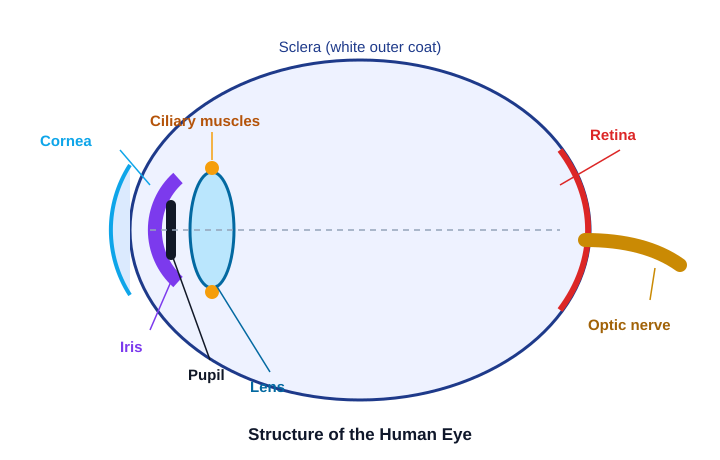
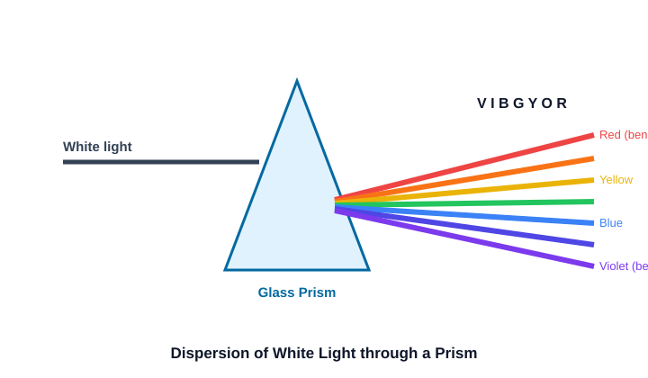
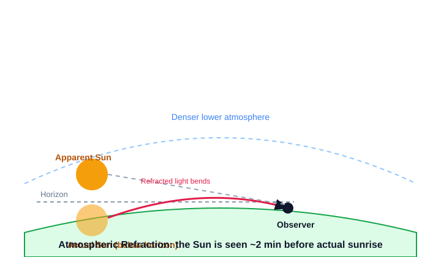

The eye works like a camera, focusing light onto a light-sensitive screen (the retina).

| Part | Function |
|---|---|
| Cornea | Transparent front; most bending (refraction) of light happens here |
| Iris | Coloured ring; controls the size of the pupil |
| Pupil | Adjustable opening that regulates light entering the eye |
| Eye lens | Fine-focuses light onto the retina (accommodation) |
| Retina | Light-sensitive screen where the real, inverted image forms |
| Optic nerve | Carries the signal from retina to the brain |
| Feature | Rods | Cones |
|---|---|---|
| Respond to | Dim light (brightness) | Bright light & colour |
| Give us | Night / low-light vision | Colour vision |
An image continues to remain on the retina for about 1/16 of a second after the object is removed.
| Human Eye | Camera |
|---|---|
| Cornea + eye lens | Camera lens |
| Iris & pupil | Aperture / diaphragm |
| Retina | Film / image sensor |
| Eyelid | Shutter |
The Ciliary Muscles physically change the curvature of the eye lens so we can focus on objects at varying distances.
The ciliary muscles relax → The lens is pulled and becomes THIN → Focal length increases.
The ciliary muscles contract → The ligaments loosen → The lens bulges and becomes THICK → Focal length decreases.
| Defect | Cannot see | Cause | Correction |
|---|---|---|---|
| Myopia (near-sighted) | Distant objects | Eyeball too long / lens too curved | Concave lens |
| Hypermetropia (far-sighted) | Nearby objects | Eyeball too short / lens too flat | Convex lens |
| Presbyopia (old age) | Both near & far | Ciliary muscles weaken | Bifocal lens |
Interactive Match: Match the defect with its correct lens correction. Clear the board!
Why do these lenses work? Here is the actual physics:
| Myopia Correction Mechanics | Hypermetropia Correction Mechanics |
|---|---|
| Image forms IN FRONT of the retina (eyeball too long). | Image forms BEHIND the retina (eyeball too short). |
| Concave Lens: Diverges light rays before they hit the eye lens. This pushes the focal point backward onto the retina. | Convex Lens: Converges light rays early. This accelerates focusing, pulling the focal point forward onto the retina. |
A glass prism splits white light into its seven colours — VIBGYOR (Violet, Indigo, Blue, Green, Yellow, Orange, Red). This band of colours is a spectrum.

Isaac Newton showed that the seven colours can be recombined back into white light using a second, inverted prism.
Interactive Sequencer: Build the process of a rainbow forming inside a water droplet.
Light from the Sun and stars bends as it passes through layers of air of continuously changing density.

Stars twinkle due to Atmospheric Refraction. The atmosphere constantly shifts, bending starlight back and forth because stars are incredibly far away and act as tiny "point sources" of light.
So why don't planets twinkle?
Planets are much closer to Earth. Instead of being a single point of light, they act as an extended source (a collection of many point sources). While one point of light on the planet might dim due to the atmosphere, another point gets brighter. These changes cancel each other out, resulting in a steady, non-twinkling shine.
Tyndall Effect: The scattering of a light beam by colloidal particles, making its path visible.
Red light has the longest wavelength, so it is scattered the least by fog, smoke and dust.
Match each part of the eye to its job. (ਅੱਖ ਦੇ ਹਿੱਸੇ ਨੂੰ ਉਸਦੇ ਕੰਮ ਨਾਲ ਮਿਲਾਓ।)
A student wrote the wrong corrective lens. Tap the highlighted part to fix it.
Tap each defect to reveal its cause and its corrective lens. (ਹਰ ਨੁਕਸ ਟੈਪ ਕਰਕੇ ਕਾਰਨ ਤੇ ਲੈਨਜ਼ ਵੇਖੋ।)
Click a part, then click the job it does. (ਪਹਿਲਾਂ ਭਾਗ ਚੁਣੋ, ਫੇਰ ਉਸਦਾ ਕੰਮ ਚੁਣੋ।)
Every "Say It Back" question in this deck has been formatted for Anki, with both English and Punjabi answers. (ਇਸ ਡੈੱਕ ਵਿੱਚ ਹਰ "Say It Back" ਸਵਾਲ ਅੰਕੀ ਲਈ ਤਿਆਰ ਹੈ।)